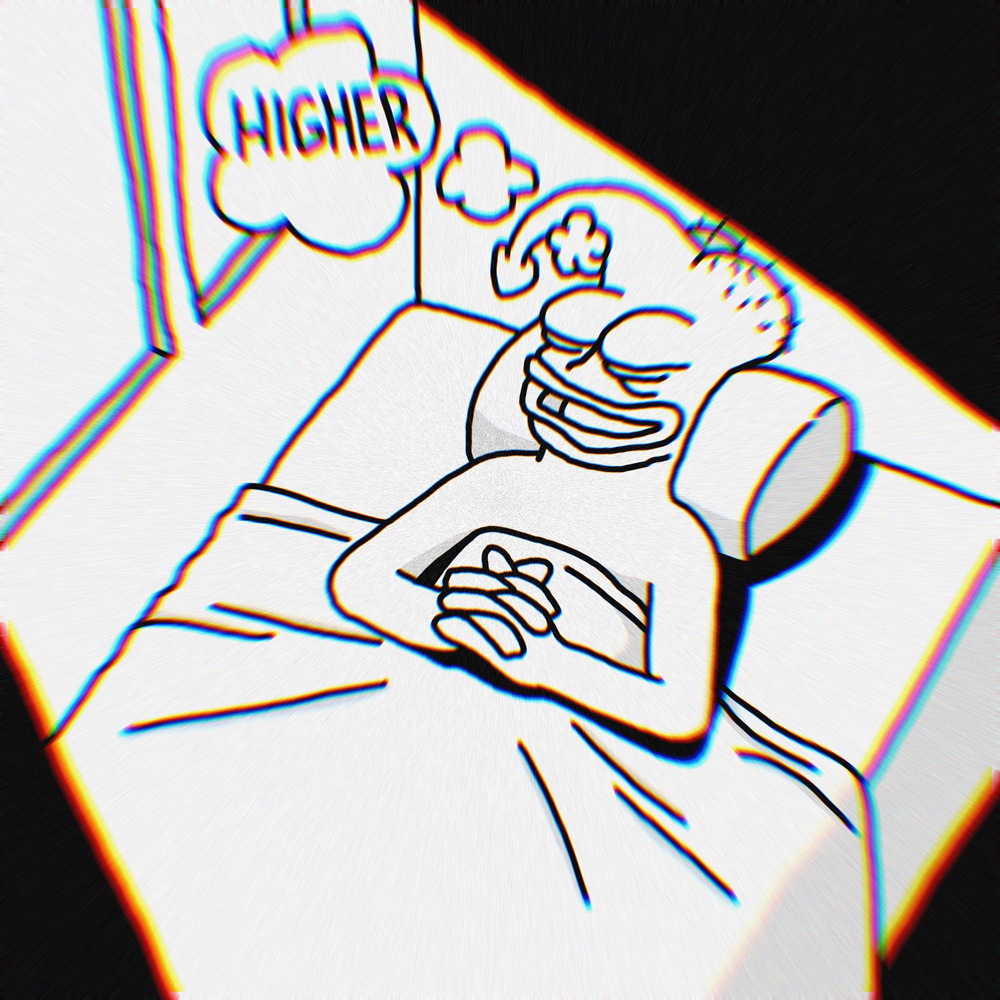
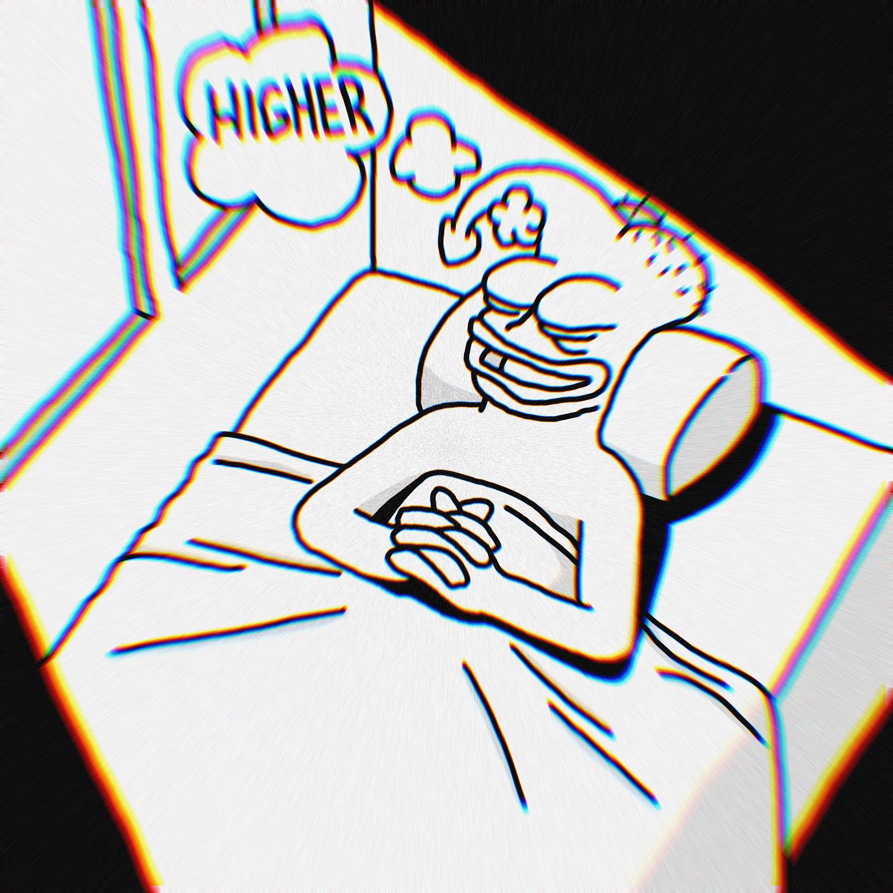
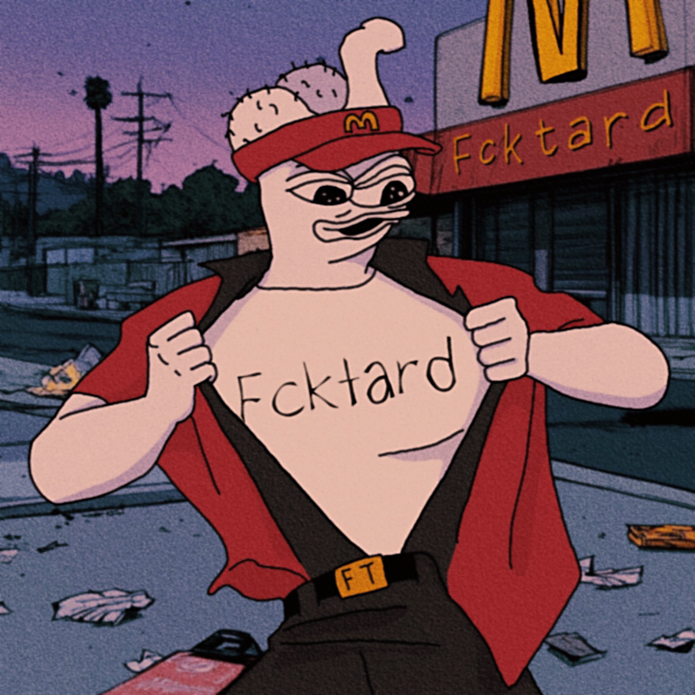
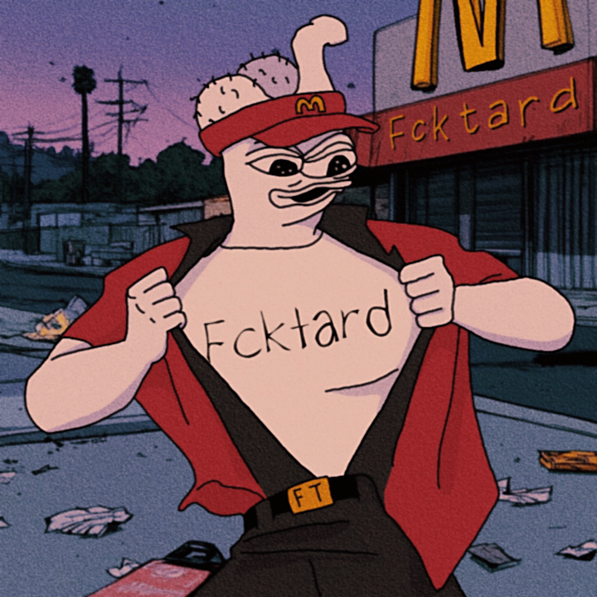

In march 2024,
artist mnewbis began working on deformed versions of pepe and other imaginary faces.
End july 2024, fucktard pfp collection was launch on sol.
Few days after that a pf token was launch as a joke by the artist. Fucktard meme coin just a few days ago, the community, supported by the artist.
Can “fucktard” be considered a copy of “brainlet”? no, they are different memes, in the same meta, using brain features in their art to criticize.
We could call it a "derivative," but that wouldn’t be entirely accurate, as "fucktard" and "brainlet" have distinct connotations and uses, despite sharing similar cultural origins.

 

 
